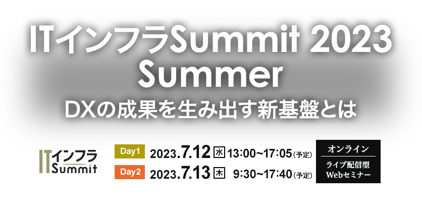

お申し込み受付を
終了しました
DX（デジタル変革）の先行企業は全社に取り組みを広げ、一部で成果を生み出すようになっています。新型コロナ禍がほぼ収束し、これも追い風となって、2023年後半からは多くの企業がDXの成果を現場に求めるフェーズに入っていきます。
それには全社の共通インフラとなる新基盤の構築・強化が欠かせません。DXのシステムは本質的に、ビッグデータを効率的に収集・格納し、AI（人工知能）やBI（ビジネスインテリジェンス）で素早く分析・意思決定する仕組みだといえます。DX基盤には様々な機能が求められます。主なものを挙げると、IoT（インターネット・オブ・シングズ）機器やセンサーの保守機能、多様なシステムや外部リソースからデータを取り込むETL機能、ビッグデータをためるデータレイク、ビッグデータを分析できる拡張性の高いデータウエアハウス、ソフトウエアの改変効率を高めるマイクロサービスアーキテクチャー、柔軟性やレジリエンス（復元力）の高いコンテナ環境、開発・運用保守のプロセスを自動化するDevOps機能、機械学習モデルの改変効率を追求するMLOps環境などです。システムやデータを守るため、セキュリティーの強化も重要です。DX基盤にこうした機能を持たせて、DXプロジェクトのスピードを加速させ、成果を生み出し続ける仕組みづくりが求められます。
このようにITインフラの重要性がますます高まる中、「ITインフラSummit 2023 Summer」を7月12日・13日の2日間にわたり開催します。
最新のITインフラ技術や、ソリューション、活用事例などをより多くご紹介いたします。
■視聴環境事前ご確認のお願い
ご講演終了後（両日）に主催アンケートがございます。
ご回答いただきました方全員に
「Amazonギフト券（1,000円分）」をプレゼントさせていただきます。
- ※「Amazonギフト券（1,000円分）」は各日催事終了後の主催アンケートへご回答いただきました方全員に後日ご登録のメールアドレス宛にお送りさせていただきます。
- ※プレゼントは、お一人様両日合わせて一回とさせていただきます。
- ※Amazon.co.jpは、本プロモーションのスポンサーではありません。
- ※Amazon、Amazon.co.jpおよびそれらのロゴは、Amazon.com, Inc.またはその関連会社の商標です。
開催概要
- 名称
- ITインフラSummit 2023 Summer
- 日程
-
2023年
7月
12日（水）
13：00～17：05（予定）
2023年 7月 13日（木） 9：30～17：40（予定）
- 開催形式
- オンライン（ライブ配信型 Webセミナー）
- 主催
- 日経クロステック
- 協力
- 日経コンピュータ、日経NETWORK、日経クロステック Active
- 協賛
- 網屋、Apptio、クラスメソッド、Cohesity Japan、日立製作所、日立ソリューションズ、インターネットイニシアティブ、パロアルトネットワークス、ピュア・ストレージ・ジャパン、レッドハット、ServiceNow Japan、サイオステクノロジー、ソフォス、Sysdig Japan、ヴイエムウェア、ゾーホージャパン（ABC順）
- 参加料
- 無料（事前登録制）
- 対象者
- 企業におけるIT部門や経営企画部門、DX推進部門の担当者、インフラ担当者、運用担当者、情報システム子会社、ユーザー企業に常駐しているSIer ほか
プログラム
各セッションをテーマ毎に色分けしています
- マイクロサービス・コンテナ・DevOps基盤Forum
- クラウド基盤最適化Forum
- AI・デジタルツイン・データ基盤Forum
- ネットワーク最適化Forum
※講演者や講演時間など、プログラムは変更になる場合がございます。予めご了承ください。
ご希望の講演日のチェックボックスにチェックを入れ「お申込みボタン」を押してお申込みください。
【Day1：7月12日（水）プログラム】
-
13：00 ~ 13：30
-
コンテナ・マイクロサービス・DevOps基盤Forum
【主催者講演】
日経コンピュータ副編集長が解説するコンテナ・マイクロサービス・DevOps最新潮流
日経BP
日経クロステック／日経コンピュータ
副編集長
中田 敦ITインフラストラクチャーの常識は過去10年間で一変した。コンテナやマイクロサービス、DevOpsの台頭がその象徴だが、これから数年の間も激動の時代を迎えそうだ。ChatGPTに代表される生成AI（人工知能）がコンテナやDevOpsをどう変えうるのか、新しいデータベース技術の台頭によってマイクロサービスをはじめとするシステムアーキテクチャーはどう変わりうるのか。日経コンピュータ副編集長が解説する。
-
13：35 ~ 14：05
-
コンテナ・マイクロサービス・DevOps基盤Forum
先進的企業はなぜ新基盤として
コンテナを採用しているのか、その活用状況とセキュリティ課題を徹底解説！Sysdig Japan
エンタープライズセールスエンジニア竹内 洋 氏世界の先進的な企業では、新基盤としてコンテナを採用する企業が増えており、今後もその数は増加の一途を辿ると予測されています。本セッションでは、700社を超えるコンテナ採用企業の実際の活用状況をもとに、その課題と対策について、セキュリティ面に焦点をあてて解説いたします
-
14：10 ~ 14：40
-
コンテナ・マイクロサービス・DevOps基盤Forum
モダンなITを支える
最新のサービスオペレーションとはServiceNow Japan
マーケティング本部 プロダクトマーケティングマネージャー早田 直樹 氏ITサービス・アプリの多くがクラウドネイティブなアーキテクチャに移行する一方、運用プロセスに関する検討は後回しになりがちです。本セッションでは、マイクロサービス・コンテナを活用したIT環境でのインフラ保守・サービス運用の課題に焦点を当てて解説し、動的に変動するクラウドリソースの構成自動管理や、イベント・アラート対応の負荷を下げるAIを利用したサービス運用（AIOps）など、運用を成功に導くための最新技術を紹介します。
-
14：45 ~ 15：15
-
コンテナ・マイクロサービス・DevOps基盤Forum
AI/MLの未来を拓く！
コンテナ時代のベストプラクティスレッドハット
OpenShift / Kubernetes アーキテクト石川 純平 氏ChatGPTなどAIの進化による世の中への影響が増大する中、多くの企業がAI活用の方法を模索しています。しかし、多くのAIプロジェクトの試みはPoC段階から脱出できず、商用化に至っていないのが現状です。本セッションでは、こうした失敗要因を分析し、成功に至るためのコンテナ活用法について紹介します。
-
15：25 ~ 15：55
-
AI・デジタルツイン・データ基盤Forum
最新のデータ管理とデータセキュリティで
DXを支えるCohesity Japan
代表取締役社長伊藤 俊明 氏データがサイロ化されていると、ビジネス上の意思決定を行うための全体像を把握することができません。データのサイロ化と非効率な運用管理は、企業のDXを妨げるだけでなく、ランサムウェアの攻撃対象領域を拡大させます。本セッションでは、サイロ化しているデータをひとつのプラットフォームに集約することで、データを活用するための準備を整え、データレジリエンスを高め、迅速な復旧に備える方法をご紹介します。
-
16：00 ~ 16：30
-
AI・デジタルツイン・データ基盤Forum
DX基盤の構築・強化で全社DXを加速させる方法
ピュア・ストレージ・ジャパン
マーケティング本部 フィールドマーケティングマネージャー正見 卓司 氏DXの先行企業は全社に取り組みを広げ、一部で成果を生み出すようになっています。しかし、DXの成果を現場に求めるフェーズに入るには、全社の共通インフラとなるDX基盤の構築・強化が欠かせません。本講演では、DX基盤に必要な機能や技術を紹介し、DX基盤の構築・強化で全社DXを加速させる方法をお伝えします。
-
16：35 ~ 17：05
-
AI・デジタルツイン・データ基盤Forum
【主催者講演】
意思決定を加速させるアナリティクスエンジニアリング
リクルート
プロダクト統括本部 プロダクト開発統括室 データ推進室
販促領域データソリューション4ユニット（まなび） ディビジョンオフィサー
山邉 哲生 氏DX による効率的・効果的な意思決定を実現するためには、誰もが高品質なデータを即時分析可能な状態で扱えることが重要ですが、一方でデータマネジメントにかかるコストも上がり続けています。本セッションでは、昨今注目を集めるアナリティクスエンジニアリングによるデータ基盤の進化についてご紹介いたします。
【Day2：7月13日（木）プログラム】
-
9：30 ~ 10：00
-
クラウド基盤最適化Forum
【主催者講演】
創業140年を超える鴻池運輸が挑む
クラウドファースト戦略とITモダナイゼーション鴻池運輸
ICT推進本部 デジタルトランスフォーメーション推進部 部長佐藤 雅哉 氏製造業やサービス業をサポートする請負サービスと国内外のあらゆるニーズに対応する物流サービスを展開する鴻池運輸は、2018年からの中期IT戦略にクラウドファースト戦略を掲げてICT基盤の改革を進めてきました。そのクラウド化の取り組みの1つである現場の基幹システムマイグレーションにおいて、どの様な課題があってどう対応してきたのか、クラウド化によってどんな気付きがあったのか、その実態をご紹介します。
-
10：05 ~ 10：35
-
クラウド基盤最適化Forum
儲けるDXプラットフォームの作り方
ヴイエムウェア
マーケティング本部 チーフストラテジスト渡辺 隆 氏DXの推進に伴い「クラウドのサイロ」という問題が顕在化しています。DXにおいてはデジタルサービス提供のスピードが重要ですが、その実現にはアプリケーションの開発、実行、管理の「プラットフォーム」が必要です。本講演ではプラットフォームを戦略的に活用するために必要なチームやVMwareソリューションについて解説します。
-
10：40 ~ 11：10
-
クラウド基盤最適化Forum
企業のDXを実現するクラウド移行戦略
クラスメソッド
AWS事業本部 本部長菊池 修治 氏DXを成功させるために、クラウド活用は欠かせない要素です。本セッションでは、企業がクラウド移行を進める上で重要なポイントや、具体的なステップについて解説します。また、リスク管理やコスト削減、システム構築のスピードアップなど、クラウド移行がもたらすメリットも取り上げます。最新の事例を交えながら、企業がデジタルトランスフォーメーションを実現するための効果的なクラウド移行戦略を提案します。
-
11：20 ~ 11：50
-
クラウド基盤最適化Forum
クラウドは「止まる」が前提。
JP1に代表されるソフトウェアの可用性の高め方サイオステクノロジー
BC&CS サービスライン石部 智則 氏日立製作所
フロントエンゲージメント推進本部 プラットフォーム事業推進部山原 滉太 氏本セッションでは、システム基盤のクラウド移行を考える際の選択肢や、「止まる」前提での設計が求められるクラウドの可用性の考え方のヒントをお伝えします。今回は日立製作所様とともに、システム運用管理ソフトウェア「JP1」を用いたクラウド上での運用管理と可用性の重要性について解説し、具体的な可用性の高め方もご紹介します。
-
11：55 ~ 12：25
-
クラウド基盤最適化Forum
クラウドファーストは、次のステージへ
もっと近づく、パブリッククラウドとオンプレミスの世界日立製作所
デジタルプラットフォーム事業部 プラットフォームサービス部 技師広瀬 希 氏先進的なお客様では、オンプレミスと複数のパブリッククラウドの使い分けが始まっています。
セキュリティやパフォーマンス、コストや柔軟性など、適材適所でプラットフォームを選択すれば、これは自然な流れです。
それでは次のステップです。
マルチなプラットフォームで、システムやデータがシームレスに稼働・連携できる仕組を検討しましょう。
-
13：00 ~ 13：30
-
クラウド基盤最適化Forum
ビジネスを加速するクラウド統合とは
日立ソリューションズ
スマートワークソリューション本部 WSI拡販推進部 部長白土 浩司 氏クラウドシフトの結果,社内にさまざまなクラウドが乱立してしまうケースが多く,最近ではクラウドを統合し,最適化する必要性が高まっています。本セッションでは,ビジネスを加速させるためのクラウド統合の重要性と成功のポイントを解説します。
-
13：35 ~ 14：05
-
クラウド基盤最適化Forum
実践！クラウドファイナンシャル管理の高度化
Apptio
ソリューションコンサルタント片倉 俊輔 氏クラウドのコスト削減に限界を感じていませんか？既にReservationも適用済み、リソースのサイジングも適切だというお悩みを良くお聞き致しますが、まだまだやれることはございます。本当の意味での最適化は、組織レベルで一貫したクラウドファイナンス管理（FinOps)を取り入れる必要があります。FinOps Foundation のボードメンバーを務めるApptioからクラウドファイナンス管理のご紹介をさせて頂きます。
-
14：10 ~ 14：40
-
クラウド基盤最適化Forum
クラウド上の未知の資産を狙う脅威からの守り方
パロアルトネットワークス
Cortex営業本部 Systems Engineer Specialist
CISSP齋藤 正道 氏クラウドは大変便利で効率的ですが、可視性の低下という副作用をもたらします。その結果未知のクラウド資産が存在する場合、セキュリティ上のリスクが生じる可能性があります。
この講演は、クラウド環境のセキュリティ強化のために、クラウド基盤を内側からと外側からの両面で守る重要性について説明します。
-
14：45 ~ 15：15
-
ネットワーク最適化Forum
監視だけでは不十分
ネットワーク障害復旧を迅速にした成功事例とはゾーホージャパン
ManageEngine マーケティング部ITOMグループ リーダー上野 翔大 氏ネットワーク環境の複雑化により、従来の監視手法だけではネットワーク障害への対応が困難になっています。ネットワーク障害復旧の迅速化を実現するためには、ネットワーク監視以外の対策も加えた包括的な対応策が不可欠です。このセッションでは、具体例を交えつつ監視プラスαのアプローチをご紹介します。
-
15：25 ~ 15：55
-
ネットワーク最適化Forum
中堅・中小企業のためのSASE入門～ネットワークセキュリティの運用を自動化するために～
網屋
ネットワークセキュリティ事業部 ネットワーククラウド部 NC営業 TM・チームリーダー三上 椎奈 氏クラウドやSaaSの業務利用が進むにつれ注目を集めるゼロトラスト。ゼロトラストの考え方がベースとなる「SASE」は、ネットワークとセキュリティの両方をクラウド上で一元管理する製品ですが、その必要性が叫ばれる一方で、複雑で理解しにくいことから多くの企業が導入を躊躇しています。「ゼロトラストとは何か」「なぜSASEが必要なのか」「面倒な運用を自動化するには」本セミナーでは中堅企業に最適なSASEソリューションをご紹介します。
-
16：00 ~ 16：30
-
ネットワーク最適化Forum
ハイブリッドワークとSASE/SSE。
次のNWに必要な条件とは？インターネットイニシアティブ
サービスプロダクト推進本部 営業推進部 ネットワークソリューション課 課長福本 翔 氏近年のパンデミックにより、テレワークの導入と、クラウドサービスの活用が急速に進みました。また、テレワークは従来の働き方改革やDXといった視点と結びつき、ユーザが自由に働く場所を選べる「ハイブリッドワーク」として普及し続けております。結果、 SASE/SSE にも注目が集まりました。しかし、SASE/SSEが全てのお客様に適しているわけではありません。本セミナーでは、ハイブリッドワーク実現における SASE/SSE の活用、それを支えるネットワークの関係をご説明します。
-
16：35 ~ 17：05
-
ネットワーク最適化Forum
ランサムウェアの現状2023年版の解説と
ネットワークセキュリティの可視化を含む
最先端のマネージドサイバーセキュリティソフォス
セールスエンジニアリング本部 本部長大木 竜児 氏本講演では、前半にソフォスが独自に調査したランサムウェアの現状2023年版の解説します。後半はオンプレミスからパブリッククラウドまで、ネットワークの可視化とサイバーセキュリティを確保するためのマネージドサービスについてご紹介いたします。
-
17：10 ~ 17：40
-
ネットワーク最適化Forum
【主催者講演】
会社の成長に併走するゼロトラストネットワークへ向けた取り組み
オープンハウスグループ
情報システム部 インフラストラクチャグループ 主任荒井 康生 氏昨今、ゼロトラストネットワークへ向けた取り組みを実施している会社様も多くいらっしゃると思います。
事業会社である弊社の取り組みと今後の展望、苦労している部分等を紹介させていただきます。
お申し込み
■視聴環境事前ご確認のお願い
Webセミナー【ライブ配信】ご参加にあたり、「視聴環境チェックサイト」での動作確認をお願いしております。音声および動画が正常に受信できるかを、下記「視聴環境チェックサイト」へアクセスしていただきご確認ください。
なお、お客様がご使用のパソコンおよび通信環境によってはWebセミナー【ライブ配信】にご参加いただけない場合がございますので、あらかじめご了承ください。
▼視聴環境チェックサイト（PC・スマートフォン）
https://ondemand.seminar.vcube.com/checker/videostream
※チェックサイトで視聴に問題がある場合は、まずセミナーの推奨環境に合っているかをご確認ください。
▼セミナー推奨環境(ビデオストリーミング配信の「受講者」の項目をご確認ください)
https://jp.vcube.com/support/requirements/req_seminar.html
※受講者側で推奨しているPCブラウザ・OSは、以下となります。
Windowsプラウザ・・・Microsoft Edge、Mozilla Firefox、Google Chrome
Macブラウザ・・・safari
WindowsOS：Windows 11、Windows 10、Windows 8.1
MacOS：macOS 最新版
※受講者側で推奨しているスマートフォン・タブレットのブラウザ・OSは、以下となります。
iOS ・・・iOS デバイス iOS 10以上、Safari
Android・・・ Android 6以上、Google Chrome
※インターネット環境によっては視聴が出来ない場合がありますので、視聴確認サイトから、受講される環境にてテストをお願いします。
■Webセミナーご受講に際し、以下の事項に同意のうえお申込みください。
-
視聴に必要なURLは、登録完了メールでご確認ください。
また、MyPage（https://ers.nikkeibp.co.jp/user/myPageLogin/）からも確認ができます。
URLはセミナーに参加する方のみ利用可能とし、再配布を禁止します。 -
受講者は、動画を録画・キャプチャーすることは一切できません。
もし、発見した場合、事務局は削除を要求できることとします。また、SNSなどへのアップも禁止します。 - セミナーの内容や受講者の個人情報などはセミナー内のみとし、口外しないでください。
- システムトラブルなどにより、画像・音声に乱れが生じた場合も対応出来かねますのでご自身でご調整ください。
- 配信中、異常と思われる接続を発見した場合、予告なく切断することがあります。
お問い合わせ
日経BP読者サービスセンターセミナー係
お問い合わせお申し込み受付を
終了しました